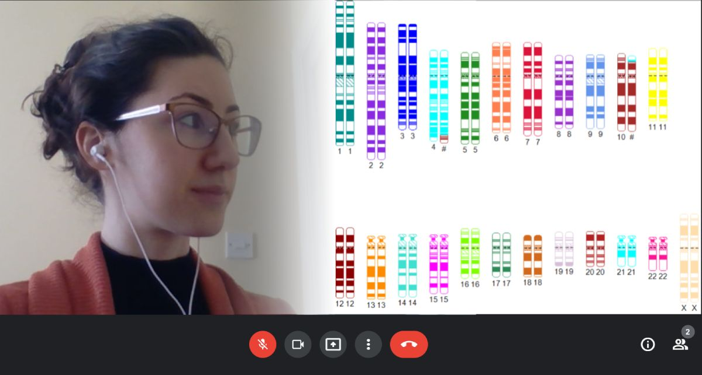

Entenda o resultado do seu teste genético
Marque sua consulta para que eu possa lhe ajudar a entender melhor o seu resultado.
MARCAR CONSULTA
Marque sua consulta para que eu possa lhe ajudar a entender melhor o seu resultado.
MARCAR CONSULTA
Resumo da minha carreira profissional
Meu nome é Marcela Hanna (ela/dela), sou Bióloga com Mestrado em Ciências da Saúde pela Universidade de Brasília (UnB) e em Aconselhamento Genético pela Universidade de São Paulo (USP), com participação no programa Ciências sem Fronteiras na Universidade de Michigan.
Além de Especialista em Genética e Biologia Molecular pelo Conselho Regional de Biologia da 4ª Região, sou membro da Associação de Enfermeiros e Conselheiros Geneticistas do Reino Unido (AGNC) e membro estrangeiro da Sociedade de Genética Humana da Australásia (HGSA).
Possuo experiência acadêmica, laboratorial e clínica em Genética Humana e Reprodução Humana Assistida. Decidi me especializar em Aconselhamento Genético pois é uma área que junta o conhecimento em Genética e um pouco de conhecimento de Psicologia, com contato com pacientes. Gosto de poder explicar conceitos difíceis de forma mais simples e de ver meu conhecimento ajudando pessoas diretamente.
Comecei um canal no YouTube durante meu Mestrado, para divulgar informações em Português e em termos simples. O propósito não era parecer nada profissional, apenas me ajudar a revisar o que eu ia aprendendo, e de quebra ajudar algumas pessoas a entender mais sobre Genética, alguns testes que são pedidos, alguns termos que usamos, etc. Muitos dos vídeos sobre Genética eram focados em ajudar estudantes a resolver questões de vestibular, e eu queria produzir algo simples e prático, especialmente pensando em famílias que estivessem considerando se consultar com um geneticista em breve, ou que tivessem se consultado e tivessem dúvidas. Enfatizo que os vídeos não são super profissionais, mas você pode checar meu canal no YouTube e meu perfil no Instagram, apesar de eu não postar muita coisa desde que comecei a trabalhar em período integral.
No momento, estou trabalhando e morando na Europa, por isso meus horários de consulta são relativamente reduzidos, mas fique a vontade para me mandar um email caso você queira marcar uma consulta em algum horário diferente, pois posso tentar acomodá-lo.
Aqui você encontra respostas para as perguntas mais frequentes. Caso sua pergunta não esteja listada, fique a vontade para entrar em contato por email
Em palavras simples: é explicar coisas sobre doenças genéticas e o risco para filhos e familiares. Por exemplo: a síndrome de Down é uma doença genética causada pela herança de um cromossomo inteiro a mais. Na maior parte dos casos, o risco de ter outra criança com síndrome de Down é muito baixo, mas existe um teste chamado cariótipo, que pode ajudar a calcular o risco. Alguns dos sintomas mais comuns da síndrome de Down são características faciais, deficiência intelectual e malformações cardíacas.
Em palavras menos simples, mas mais correto: O aconselhamento genético é um processo de comunicação cujo objetivo é ajudar indivíduos, casais e famílias a entender doenças genéticas, explicando a causa e o risco para futuras gerações. O profissional especialista em genética humana, através de uma abordagem não-diretiva, explica as capacidades e limitações de cada teste genético, interpreta o resultado e ajuda o paciente a entender como lidar com as informações. É um processo em conjunto, cujo propósito é empoderar a pessoa a se adaptar às implicações médicas, psicológicas, familiares e reprodutivas da contribuição do DNA para condições de saúde específicas, respeitando o contexto de cada paciente.
No momento, estou cobrando 350 reais na consulta, que pode ser paga através de Pix ou PayPal.
Infelizmente, não.
Você pode marcar uma consulta, sim, e eu posso tirar suas dúvidas sobre várias coisas relacionadas à genética, inclusive sobre testes disponíveis e se vale a pena fazer um teste ou não. Dependendo do caso, você não vai precisar fazer nenhum teste, podendo ter ideia do risco de desenvolver câncer ou de ter filhos com uma doença genética com base nas informações que você me trouxer sobre o histórico de saúde do resto da sua família. Além disso, podemos discutir sobre os testes que existem e você pode decidir fazê-lo no futuro, pois os testes estão ficando cada vez mais baratos e acessíveis, com lugares que dividem o valor em até 12 vezes. O primeiro passo é conversarmos e tirarmos suas dúvidas, e você vai decidir quando/se o teste vale a pena para você.
Você pode marcar uma data através do calendário. Através deste site, você checa uma data disponível, com pelo menos 7 dias de antecedência. Lá, você pode dar alguns detalhes, como motivo da consulta e se você já fez algum teste genético, para que eu possa ter uma ideia do caso e se eu poderia atendê-lo. Se eu não puder atender seu caso, pois seria um caso mais recomendado de ser avaliado por um médico, eu vou te avisar e te recomendar que procure outro serviço. Se eu puder te atender, mandarei meus dados para o pagamento da consulta e mandarei um link para a reunião. Você tem até 48h antes da consulta para fazer o pagamento, para confirmar a consulta. A consulta consiste em uma conversa por vídeo, que recomendo que seja feita no computador, para que você possa ver imagens ou desenhos, pois costumo compartilhar minha tela para explicar coisas de forma mais didática. Se houver algum problema de conexão, podemos conversar por telefone, ou remarcar a consulta para outro dia.
A consulta tem duração máxima de 60 minutos.
Você tem 15 dias para retornar sem custo. Para retornos e familiares, o valor atual da consulta é de 250 reais.
Para aconselhamento de familiares já atendidos por mim, cobro um valor reduzido. O valor reduzido se dá pois é preciso menos tempo de estudo para atender um caso parecido, mas ainda preciso cobrar pois cada caso é diferente e cada pessoa vai ter perguntas e necessidades diferentes.
Não, eu não posso solicitar exames genéticos nem outros exames que ajudem a diagnosticar uma doença, como exames de sangue, raio-X, ultrassom. O diagnóstico de doenças é restrito a médicos.
Sim, você pode consultar profissionais em todo o Brasil, incluindo atendimentos públicos, no site da Sociedade Brasileira de Genética Médica (SBGM).
Não. Por mais que eu conheça alguns serviços de confiança, nenhum estabelecimento está me pagando para eu fazer propaganda no momento.
Recomendo que você tenha informações da sua família, dependendo do motivo da sua consulta. Por exemplo, se você teve abortamentos recorrentes, seria bom se informar se seus pais/avós/irmãos também tiveram. Se você quer saber sobre risco de câncer porque sua tia teve câncer de mama, seria bom saber a idade em que ela foi diagnosticada, o tipo do câncer, se tem outras pessoas que apresentaram câncer na família, etc.
Sim! Estou sempre tentando aprender e melhorar meu serviço, e um dos meus objetivos profissionais é que pacientes LGBTQIA+ não se sintam desconfortáveis nas consultas, evitando cuidar da saúde, e que possam ter acesso a informações.
Você pode mandar um email para aconselhamentogenetico8@gmail.com. Entretanto, cobro o equivalente aos honorários sugeridos pelo Conselho de Biologia da 4a Região. Portanto, se o evento é de uma hora, meus honorários seriam de 200 reais.
Yes. If you would like to book an appointment but you don't speak Portuguese, I can provide genetic counselling in English as well. However, instead of using Calendly at the end of the page to book your appointment, I recommend you send an email to aconselhamentogenetico8@gmail.com. You can view this website in English, if you right-click and pick the option "translate to English". If you're on your phone, press the three dots on the navigation bar and choose "translate". Although the automatic translation isn't perfect, you can get access to some information about me and about the appointment.
Marcando uma consulta, eu posso: